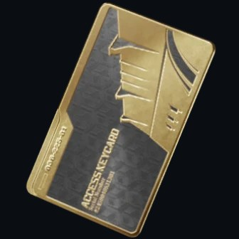

Aile est bureau du responsable
East Wing Manager's Office · Keys
Carte d’accès qui ouvre : aile est Manager's bureau. Elle dispose de 20 utilisations : chacune compte, y compris quand la salle est déjà pillée. Elle est relevée à 1 endroit(s) sur la carte. Poids 0,05 kg.
4 148 582 Tekniqgrade 6 mythique · 4 148 582 par case